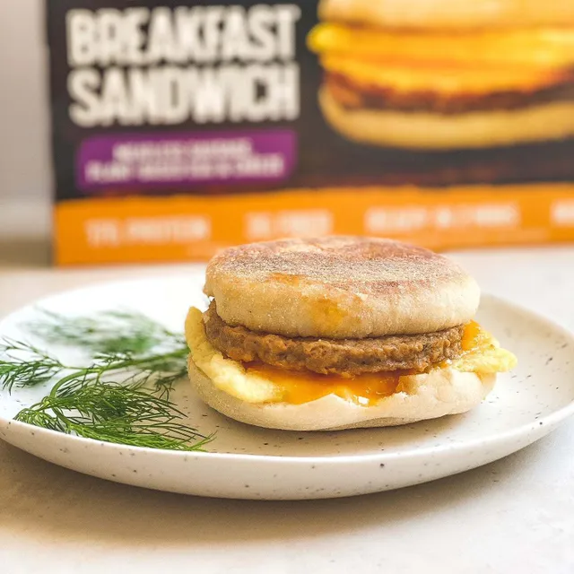

Vegetarian Sausage Egg Muffin

Description
This recipe makes a vegetarian sausage and egg muffin.
It is savory and a quick meal.
It has two halves of an english muffin with a piece of
vegan sausage and an egg in betweem.
Ingredients
- 1 English muffin
- 1 (or 2) Vegetarian sausage patty
- 1 large egg
- Olive oil
Steps
- Cook vegetarian sausage patty according to package directions
- While cooking, add olive oil and whole egg to pan
- Take sausage and egg out when done cooking
- While sausage and egg are cooking, toast english muffin
- Once muffin toasted and egg and vegetarian sausage cooked, assemble